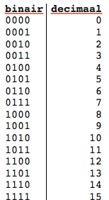

In het binair stelsel bestaan getallen uit 0 en 1. Binaire getallen met één 1 en verder allemaal nullen staan gelijk aan de macht van 2:
00000001 = 1
00000010 = 2
00000100 = 4
00001000 = 8
00010000 = 16
00100000 = 32
01000000 = 64
10000000 = 128
Je kunt nu heel makkelijk de decimale waarde van een binair getal berekenen. Zeg maar het getal wat in binair staat. Neem als voorbeeld het binaire getal 00101001. De decimale waarde van dit getal is 41.
Je hebt meerdere manieren voor binair tellen. De één telt binair met zijn vingers, de ander deelt het getal dat hij binair op wil schrijven (de decimale waarde) door 2 en schrijft de rest op. Als je die resten van onder naar boven (dus het onderste getal links) opschrijft heb je het binaire getal. Voorbeeld: Het getal 1000
1000 : 2 = 500, de rest is 0
500 : 2 = 250, de rest is 0
250 : 2 = 125, de rest is 0
125 : 2 = 62, de rest is 1
62 : 2 = 31, de rest is 0
31 : 2 = 15, de rest is 1
15 : 2 = 7, de rest is 1
7 : 2 = 3, de rest is 1
3 : 2 = 1, de rest is 1
1 : 2 = 0, de rest is 1.
Als je nu de getallen van links naar rechts opschrijft krijg je als binair getal: 1111101000.
Voor het omrekenen van een decimale waarde naar een binair getal zou ik de volgende manier aanraden: Maak een tabel met meerdere kolommen en 2 rijen. Schrijf in het rechter hokje van de bovenste rij het getal ‘1’. Werk nu verder naar links door het getal dat je als laatst hebt opgeschreven keer 2 te doen en in elk linker hokje de vermenigvuldiging op te schrijven. Dan kies je een getal dat je in het binair stelsel wilt gooien. Kijk naar de hokjes in de bovenste rij en bedenk welk getal het grootste is dat in jouw getal voorkomt. Daar schrijf je een 1 op. Werk zo verder naar rechts tot je aan de rechterkant bent. Dit is je binaire getal. Tip; oneven getallen als 11 kun je maken met 8, 2 en 1.
Voorbeeld: het getal 601
|512 |256 |128 |64 |32 |16 |8 |4 |2 |1 |
|-------------|-------------|-------------|-------------|-------------|-------------|-------------|-------------|-------------|-------------|
|1 |0 |0 |1 |0 |1 |1 |0 |0 |1 |
Uitleg Binair Stelsel 